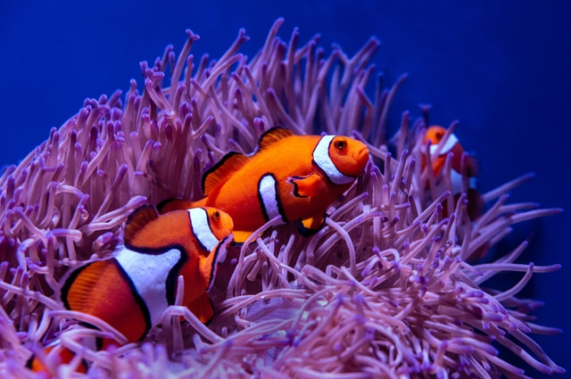

fish
fishes live in water.
they have gills to breath.
there are smaller and larger fishes.
the biggest is blue whale.
the smallest is the arf minnow of the genus Paedocypris.
the fastest fish is sail fish.
they are cute and adorable.
6 Essential Facts About Fish
There Are Three Main Fish Groups.
All Fish Are Equipped With Gills.
Fish Were the World's First Vertebrate Animals.
Most Fish Are Cold-Blooded.
Fish Are Oviparous Rather Than Viviparous.
Many Fish Are Equipped With Swim Bladders.
Image result for about fish
Characteristic of fish
Ectothermic.
Lateral line.
Two chambered heart.
Gills used for respiration.
No external ears.
No eye lids.
humans love fish and some people are fish lover.
THaNK YoU
